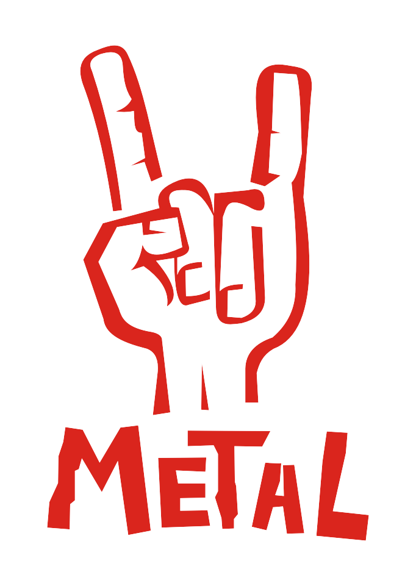

Metallica es una banda de thrash metal estadounidense que se origina en Los Ángeles, pero con base en San Francisco desde febrero de 1983. Fue fundada en 1981 en Los Ángeles por Lars Ulrich y James Hetfield, a los que se les unirían Dave Mustaine y Ron McGovney. Estos dos músicos fueron después sustituidos por el guitarrista Kirk Hammett y el bajista Cliff Burton, Dave Mustaine fue despedido un año después de ingresar en la banda debido a su excesiva adicción al alcohol y su actitud violenta, y fundó la banda Megadeth, siendo sustituido por Kirk Hammett ex guitarrista de Exodus. Ron renuncia a la banda debido al mal comportamiento de Dave Mustaine, era violento y problemático cuando estaba bajo el efecto del alcohol. El colmo fue cuando Mustaine mojó el bajo de Ron con cerveza, él sin saberlo lo conectó, recibiendo una descarga eléctrica. Es entonces, tras contactar con Cliff Burton que la banda se traslada a San Francisco. (Cabe resaltar que Ron sabía que lo iban a despedir y sustituir por Cliff Burton). Por otra parte, el 27 de septiembre de 1986, la muerte de Cliff Burton en un accidente de autobús en Suecia, durante una de sus giras, provocó la entrada al grupo de Jason Newsted,1 quien, tras su abandono quince años más tarde, sería sustituido por el bajista actual, Robert Trujillo.

Iron Maiden es una banda británica de heavy metal fundada en 1975 por el bajista Steve Harris. Es considerada una de las bandas de heavy metal más importantes de todos los tiempos. Ha vendido más de 100 millones de discos en todo el mundo, a pesar de haber contado con poco apoyo de la radio y la televisión comercial durante la mayor parte de su carrera. Sin embargo, la banda basó su éxito en llegar directamente a los aficionados, grabando discos de alta calidad y realizando actuaciones en vivo consideradas de las mejores del género.
Iron Maiden ha obtenido diversos reconocimientos a lo largo de su carrera como el Premio Ivor Novello para el logro internacional en 2002. En 2005 fueron incluidos en el Hollywood's RockWalk en Sunset Boulevard, Los Ángeles. En 2009 fue ganadora del premio Mejor Performance en Vivo en los BRIT Awards, el premio musical más importante del Reino Unido. En el año 2011 también obtuvieron un Grammy, en la categoría de 'Mejor interpretación de Metal', por el tema 'El Dorado'. Además ha ganado el premio de mejor banda metal británica del año en varias ocasiones, en los "Metal Hammer Golden Gods Awards", entre otros reconocimientos.